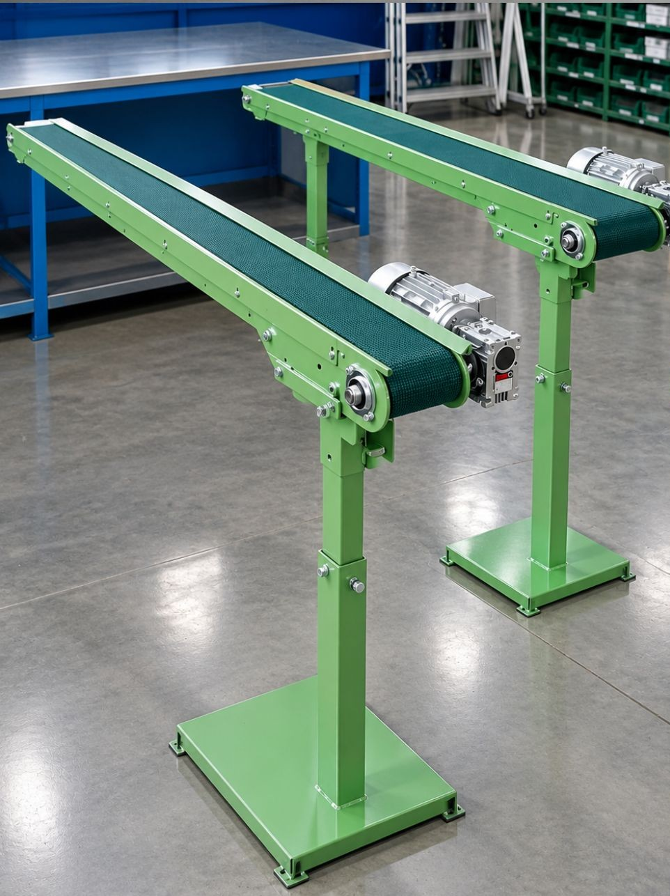

La fase di vendita non è una semplice proposta commerciale: è un percorso tecnico in cui analizziamo le esigenze del cliente e proponiamo la soluzione più adatta tra nastri trasportatori, rulliere, mototamburi e sistemi di movimentazione completi.
Ogni impianto viene configurato in base a:
Forniamo preventivi chiari, dettagliati e senza sorprese. Ogni proposta include schede tecniche, materiali utilizzati, tempi di consegna e possibilità di personalizzazione.
Il nostro obiettivo è garantire un impianto affidabile, duraturo e perfettamente calibrato sulle esigenze produttive del cliente.
